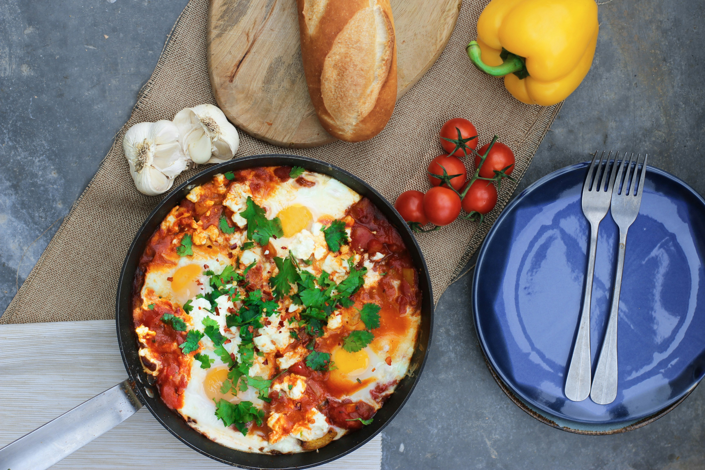

Home
Shakshuka

Photo by Sara Dubler on Unsplash
Description
Shakshuka (or shakshouka) is a traditional Tunisian dish featuring poached eggs in a spicy tomato sauce with onions, bell pepper, and garlic. Perfect for breakfast.
Ingredients
- 3 tablespoons olive oil
- 1 ⅓ cups chopped onion
- 1 cup thinly sliced bell peppers
- 2 cloves garlic, minced, or to taste
- 2 ½ cups chopped tomatoes
- 1 hot chile pepper, seeded and finely chopped, or to taste
- 1 teaspoon ground cumin
- 1 teaspoon paprika
- 1 teaspoon salt
- 4 large eggs
Steps
- Gather all ingredients.
-
Heat olive oil in a skillet over medium heat. Stir in onion, bell pepper, and garlic; cook and stir until vegetables have softened and onion has turned translucent, about 5 minutes.
-
Meanwhile, mix together tomatoes, chile pepper, cumin, paprika, and salt in a bowl.
-
Stir tomato mixture into onion mixture. Simmer, uncovered, until tomato juices have cooked off, about 10 minutes.
-
Make 4 indentations in tomato mixture; crack eggs into indentations. Cover the skillet and cook until eggs are firm but not dry, about 5 minutes.
- Serve and enjoy!